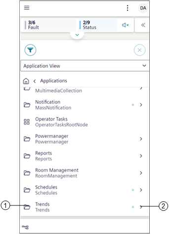
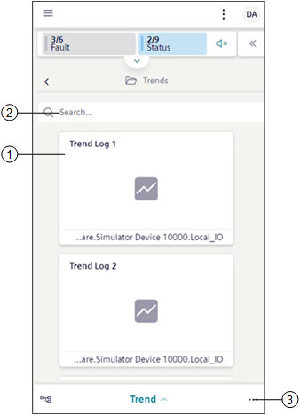
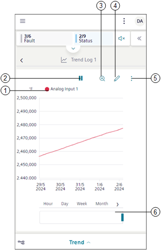
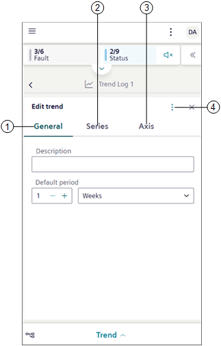
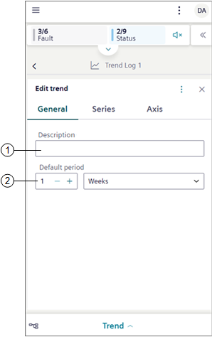
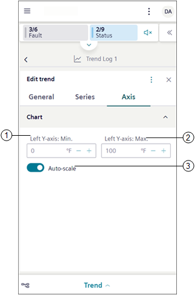

Trends Workspace for Mobile Flex
The Trends application allows you to work with trends that are recurring samples of data. In order to view the Trends application, you must have show rights.
Trends Workspace
Trends are located under the Application View > Trends.

|
1 | Trends | Displays all the trend objects in a tile view. |
2 | | Displays the subfolders such as Offline Log Objects, Online Log Objects and Trend View Definitions. |

|
1 | Trend Log | Navigates to the chart preview of the selected trend. |
2 | Search bar | Allows you to search for existing trends from the tiles. |
3 | | Displays following options: |
Trend Workspace- View Mode
The view mode allows to view the complete chart preview of the selected trend view definition, online or offline trend log objects.

|
1 | Legend | Displays information about the objects present in the trend view definition. |
2 | | Stops logging trend when you tap . To restart logging trends, tap . |
3 | | Displays the chart data in the zoom mode for the selected time interval. See Zoom Data in Additional Trends Procedures. |
4 | | Displays the trends workspace in the Edit mode. |
5 | | Displays the following options: Show data status indication: Displays quality indications. See Display Quality Indication in Creating and Managing Trend View Definitions. Manual upload: Fetches the latest data of all the BACnet trend log objects and displays in the chart. This option is enabled only for trend log or trend log multiple objects or if the selected trend view definition contains offline trend log objects or trend log multiple objects. Delete: Deletes the selected trend view definition, online or offline trend log object. Export: Displays the Export file dialog box, that allows you to download trend data according to the specified sampling rate in either PDF, CSV, or Xlsx formats. |
6 | Pre-defined time ranges | Displays the trend series according to the selected time range. |
Export file
Exports the trend data according to the selected sampling rate in a PDF, CSV, or Excel format.
|
1 | Sampling rate | Select any of the following type to export the trend data: NOTE: The Sampling rate options are displayed based on selected time range.
|
2 | File type | Select any of the following file type to export the trend data:
|
3 | Export | Downloads the trend report in the selected format. |
Trends Workspace - Edit Mode
The Edit mode allows to modify the properties of the selected trend view definition, online or offline log object.

|
1 | General | Allows you to modify properties, such as description or time period, for which you want the data to reflect in the chart, chart properties, and so on. For more information, see General Properties in the reference section. |
2 | Series | Allows you to add new data points and modify the look and feel of the chart. For more information, see Series Properties in the reference section. |
3 | Axis | Allows you to specify the Max or Min range for the Left Y-axis or Right Y-axis which is displayed in the Trend View. |
4 | | Displays the following options: Add charts: Creates new charts. Discard changes: Discards the changes that are made in the trend view definition. Save: Saves the selected trend view definition. If you add new data points to an online or offline log object, then a new trend view definition is created. Save as: Saves the trend view definition with desired new name. |
General Properties
Allows you to modify properties such as the trend name, the time period for which you want the data to reflect in the chart, chart properties, and so on.

|
1 | Description | Allows you to enter the description for a trend view definition. |
2 | Default period | Allows you to specify the time range, for which the trend data should display in the Trend View. |
Series Properties
Allows to modify properties, corresponding to the individual trend series of a trend view definition.
|
1 | Style | Allows you to select the appropriate style properties like Color, Width, Dash Type, Marker, and Interpolation for each trend series. For more information, see the Style Properties table in the Series Properties reference section. |
2 | | Displays the Select data point dialog box that allows you to add one or more data points. |
3 | | Displays option to remove sub charts. |
4 | Data point | Displays the description of the data point. You can also enter a name for trend series in the text box below, which is stored as a description in the current language of the user. |
5 | | Displays the following options: Data point info and Show data point properties: Displays the object information such as description, name, alias, device associated with, path, and so on. Rename: Enables the Data point section and allows to rename the data point. Move to: Moves the data points within sub charts. Select property: Allows to select the appropriate data point property. The Select property option displays only if the data point has more than one property. Show trendlog properties: Navigates to the properties section in the additional information pane. Show in hierarchies: Navigates to the location of the selected data point in the Tree view. Left Y-axis and Right Y-axis: Indicates the y-axis where the data point is scaled (left or right). Delete: Removes the trend series from the trend view definition only. |
Axes Properties
Allows you to specify the Max or Min range for the Left Y-axis or Right Y-axis which is displayed in the Trend view.

|
1 | Left Y-axis: Min. | Allows you to specify the minimum range for the left y-axis, which displays in the Trend View. |
2 | Left Y-axis: Max. | Allows you to specify the maximum range for the left y-axis, which displays in the Trend View. |
3 | Auto-scale | Auto-scale: Displays scale of the y-axis, based on the trend series data. A minimum and maximum range must be defined if auto-scale is disabled. |